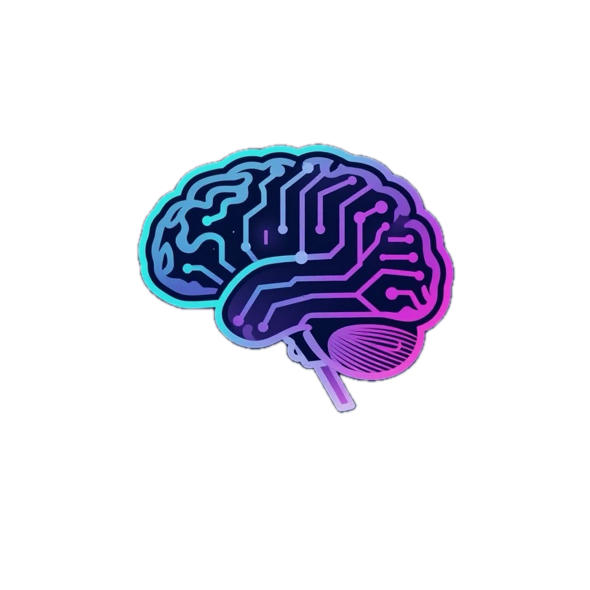

Willkommen bei der Berlin Psychedelic Science Association (BPSA)
Du interessierst dich für Psychedelika, Bewusstsein und Wissenschaft? Dann bist du bei uns richtig.
Die BPSA bringt Studierende und Interessierte aus unterschiedlichen Fachrichtungen zusammen, um gemeinsam über Psychedelik, Bewusstsein, Wissenschaft, Philosophie und Gesellschaft nachzudenken.
 Nächster Talk
Nächster Talk
Nächster Talk · Dienstag, 20.10.2026
„The Systematic Scientific Study of Altered States of Consciousness“
Wie lassen sich psychedelische und andere veränderte Bewusstseinszustände systematisch beschreiben, messen und vergleichen? — mit Prof. Dr. Timo Torsten Schmidt (Medical School Berlin)
- Dienstag, 20. Oktober 2026, 19:00 – 20:30 Uhr, inkl. Apéro
- HU Berlin, Philippstraße 12, Haus 4, Hörsaal 4 — und im Livestream auf Zoom
- 45 Minuten Vortrag auf Englisch, danach Q&A
Timo Torsten Schmidt ist Professor für Cognitive Neuroscience an der Medical School Berlin und hat die Altered States Database gegründet, mit der sich Erfahrungen unter verschiedenen Substanzen und Methoden erstmals quantitativ vergleichen lassen.
Danach: 03.11.2026 — Thema und Speaker geben wir rechtzeitig bekannt.
Vergangene Talks
08.09.2026
„Logos und Ekstase“
Zur Genealogie eines akademischen Tabus — mit Miguel Estéfano Mora Vera
Am 08.09. sprachen wir über „Logos und Ekstase“ – und darüber, was die Geschichte des abendländischen Denkens uns über den Umgang mit außergewöhnlichen Bewusstseinszuständen lehren kann. Die Aufzeichnung gibt es hier, die Bilder vom Abend darunter.